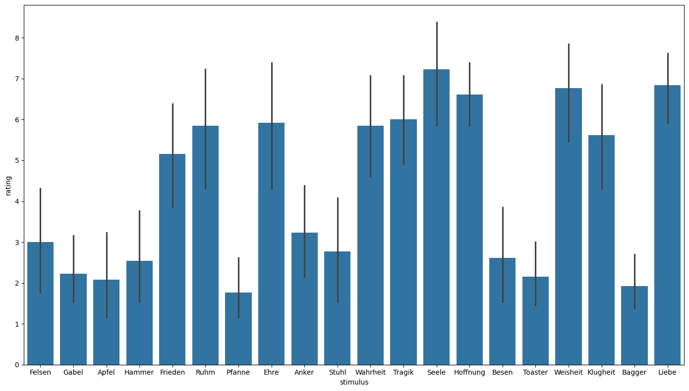
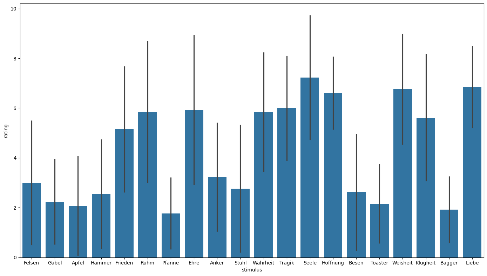
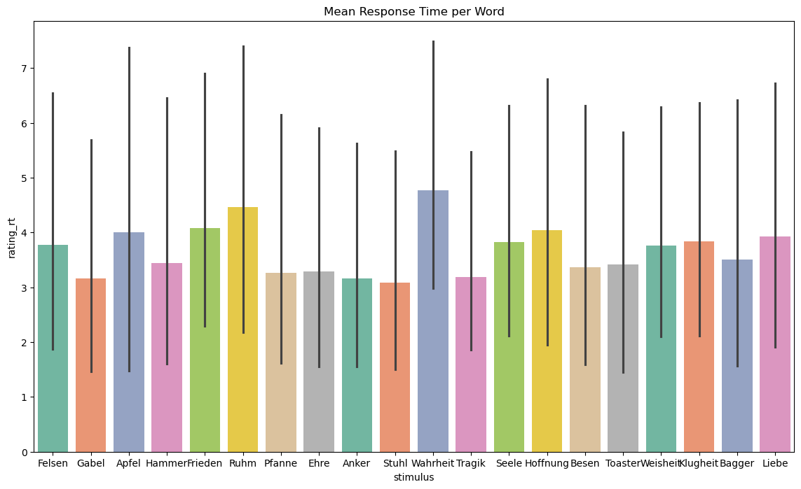
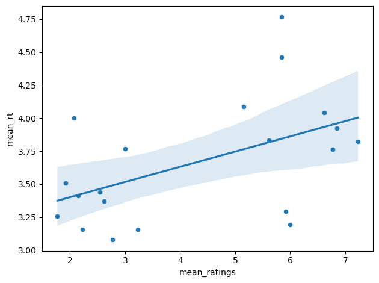

Experimentation II - Data Preprocessing and Simple Analyses#
Cosimo Iaia, Christian Fiebach
Dear all, welcome back after the Christmas break, and thank you for handing in your experiment scripts and csv-datasets!!!
In this final session of the course, we will work with these data and try to read the into python to have a first look at them.
Outline#
Within this notebook we will go through a few steps that frequently occur when getting our data. These include:
Building a dataset
Reading in the log files from our subjects
Having a look at the data
Identifying potential problems and cleaning them
Defining which variables to include into the dataset
Writing the variables to a new dataset
Visualizing the data
Calculating descriptive statistics
Info on final exam (Modulpruefung)
Building Our Dataset#
Note that we can expect to do a bit of pre-processing … because a quick glance already showed that there is a bit of variation between some of the files. So some of the first things we may have to do is to clean files a bit, so that they can be read in automatically and converted into a dataset with which we can work efficiently.
(Even though probably different from the current case, this kind of cleaning or pre-processing is not so uncommon in experimental work. Some cases over which we may stumble in “everyday lab life” might be missing triggers in an EEG dataset, so that we have to reconstruct timing and add it into a file post hoc, or correct a systematic delay that occurred due to technical problems in some subjects, etc.)
Reading in the log files#
The first thing we have to do is access our experimental log files which contain the data. Remember that you all submitted a *.csv file, so to work with those (e.g., loop over them, open them …), we need a list of these *.csv files. We will need quite flexible code here, as we did not define strict filenames conventions. Thus, filenames could very quite a bit across files.
import pandas as pd
from os import listdir
#Define your directory where you store your data
cwd = '/Users/cfiebach/Desktop/pfp25_psychopy_data/'
#List of all files contained in your directory
files = listdir(cwd)
#Here, make sure that you have only csv files:
#i.e., exclude any file that is not a csv
files = [file for file in files if '.csv' in file] # this is a list comprehension
print(files)
#Note that this is equivalent to the following code:
#files_csv = list()
#for file in files:
# if '.csv' in file:
# file_csv.append(file)
# ... just that this would generate a new list (files_csv) from files, which only contains *.csv files!
['AM.csv', 'BB.csv', '1_2026-01-12_10_07.csv', 'dc_2026-01-12_13_03.csv', 'LB_2026-01-08_14_12.csv', 'KQ_2026-01-12_21_38.csv', 'AK_2026-01-11_14_16.csv', 'D.H..csv', 'AS_2026-01-12_15_59.csv', 'SL_2026-01-05_12_22.csv', 'AB.csv', 'KP_2025-12-30_17_41.csv', 'HW_2026-01-09_11_00.csv']
As a test, let’s print the list and see if it contains the twelve files we expect it to contain:
## You all know how to print a list, right?
## Please try out after the course if not ...
## Hint: What would be an elegant way to do this? Do you remember the enumerate function?
OK, what next?
Dataset#
Maybe we first have a look at our data - we have only a few short datasets - so we can actually look into them to check if everything is ok. For this, we want to loop over the filenames, open them (i.e., read them in) and maybe first check if all individual datasets have the same length.
#Initilize an empty list in which you store the files you open
dfs = list()
#Loop through the file names ...
for sub_id, file in enumerate(files):
# ... and open the current file in pandas
df = pd.read_csv(cwd + file) # the default separator here is (sep = ',')
#Let's use the .column attribute combine with len() to check for the number of columns in each file:
n_columns = list(df.columns)
#This will print the number of columns:
print(file, f' columns found: {len(n_columns)}')
AM.csv columns found: 1
BB.csv columns found: 1
1_2026-01-12_10_07.csv columns found: 5
dc_2026-01-12_13_03.csv columns found: 6
LB_2026-01-08_14_12.csv columns found: 5
KQ_2026-01-12_21_38.csv columns found: 8
AK_2026-01-11_14_16.csv columns found: 8
D.H..csv columns found: 6
AS_2026-01-12_15_59.csv columns found: 8
SL_2026-01-05_12_22.csv columns found: 8
AB.csv columns found: 5
KP_2025-12-30_17_41.csv columns found: 8
HW_2026-01-09_11_00.csv columns found: 9
OK, so there are quite obvious differences here that we need to fix. Maybe we have a quick look at the datasets themselves, right? We can use almost the same syntax for this …
#Initilize an empty list in which you store the files you open
dfs = list()
#dictionary for remapping the name of the columns
#this is needed because not all files are in the same format/naming scheme
#rename_columns = {'reaction_time': 'rating_rt',
# 'item': 'stimulus'}
#we will only extract what we need
columns_to_include = ['stimulus', 'rating', 'rating_rt']
#loop through the file names
for sub_id, file in enumerate(files):
#open in pandas
df = pd.read_csv(cwd + file) # the default separator here is (sep = ',')
print(df)
participant_id;age;handedness;item_number;item;rating;reaction_time
0 AM;28;right;1;Felsen;1;1.029930300079286
1 AM;28;right;2;Gabel;1;0.5118430000729859
2 AM;28;right;3;Apfel;1;0.5044777998700738
3 AM;28;right;4;Hammer;1;0.6124843996949494
4 AM;28;right;5;Frieden;6;4.275973499752581
5 AM;28;right;6;Ruhm;7;1.4195324000902474
6 AM;28;right;7;Pfanne;1;0.8086201003752649
7 AM;28;right;8;Ehre;8;0.9316960000433028
8 AM;28;right;9;Anker;1;0.8511977000162005
9 AM;28;right;10;Stuhl;1;0.7115434999577701
10 AM;28;right;11;Wahrheit;2;2.1956179002299905
11 AM;28;right;12;Tragik;5;3.1470423000864685
12 AM;28;right;13;Seele;9;1.1324688997119665
13 AM;28;right;14;Hoffnung;5;0.9373785997740924
14 AM;28;right;15;Besen;1;0.6557208998128772
15 AM;28;right;16;Toaster;1;0.82121940003708
16 AM;28;right;17;Weisheit;8;4.14547669980675
17 AM;28;right;18;Klugheit;5;2.5146238999441266
18 AM;28;right;19;Bagger;1;0.7188483001664281
19 AM;28;right;20;Liebe;3;0.6887897998094559
stimulus;rating_rt;rating;trial_num;left_handed
0 Ruhm;6.000644298999987;4;0;False
1 Seele;6.058603915999981;8;1;False
2 Besen;1.6637448750000203;1;2;False
3 Wahrheit;9.190698747999988;3;3;False
4 Bagger;1.9032760489999987;1;4;False
5 Pfanne;0.9919021160000057;1;5;False
6 Frieden;5.466973135999979;2;6;False
7 Weisheit;5.784794346000012;7;7;False
8 Tragik;3.250214000000028;5;8;False
9 Anker;2.2046700529999725;1;9;False
10 Klugheit;5.757962743000007;2;10;False
11 Ehre;6.303314152999974;3;11;False
12 Felsen;1.818202006999968;1;12;False
13 Hoffnung;9.244281462999993;4;13;False
14 Stuhl;1.525011652000046;1;14;False
15 Toaster;1.285006801999998;1;15;False
16 Liebe;2.882161231999987;7;16;False
17 Apfel;1.3964048160000289;1;17;False
18 Hammer;0.9609031260000052;1;18;False
19 Gabel;0.7806224210000323;1;19;False
left_handed item_num stimulus rating rating_rt
0 False 0 Gabel 1 3.715700
1 False 1 Tragik 8 2.360258
2 False 2 Frieden 7 3.540267
3 False 3 Felsen 3 6.842132
4 False 4 Stuhl 1 4.074685
5 False 5 Ehre 9 2.066607
6 False 6 Besen 1 3.730497
7 False 7 Toaster 2 3.533332
8 False 8 Seele 9 2.525366
9 False 9 Liebe 7 7.447609
10 False 10 Hammer 4 5.699570
11 False 11 Wahrheit 6 3.285074
12 False 12 Klugheit 6 6.723781
13 False 13 Apfel 1 2.066876
14 False 14 Hoffnung 8 5.601884
15 False 15 Ruhm 7 2.309822
16 False 16 Pfanne 1 2.860485
17 False 17 Anker 6 2.498810
18 False 18 Bagger 2 3.603166
19 False 19 Weisheit 9 2.043878
subject_id left_handed stimulus trial_num rating rating_rt
0 dc False Klugheit 1 7 2.512514
1 dc False Bagger 2 1 1.228019
2 dc False Wahrheit 3 7 1.545878
3 dc False Besen 4 3 2.292935
4 dc False Toaster 5 2 1.212433
5 dc False Stuhl 6 3 1.451921
6 dc False Tragik 7 6 1.442520
7 dc False Apfel 8 2 1.927128
8 dc False Hoffnung 9 7 2.012083
9 dc False Liebe 10 7 1.475682
10 dc False Seele 11 8 1.626703
11 dc False Ehre 12 9 1.210633
12 dc False Gabel 13 1 1.898077
13 dc False Anker 14 2 1.310516
14 dc False Ruhm 15 9 1.376745
15 dc False Weisheit 16 7 2.144871
16 dc False Felsen 17 2 2.276952
17 dc False Frieden 18 7 2.293221
18 dc False Hammer 19 1 2.655042
19 dc False Pfanne 20 2 1.932250
trial_num stimulus rating rating_rt left_handed
0 0 Wahrheit 7 7.490673 False
1 1 Bagger 2 2.047705 False
2 2 Tragik 9 2.295384 False
3 3 Hoffnung 8 1.820768 False
4 4 Ruhm 9 1.881772 False
5 5 Besen 2 1.865535 False
6 6 Toaster 4 1.528978 False
7 7 Seele 8 2.539544 False
8 8 Klugheit 7 1.568923 False
9 9 Pfanne 3 3.190959 False
10 10 Apfel 1 2.937504 False
11 11 Stuhl 2 1.364731 False
12 12 Anker 3 1.545791 False
13 13 Weisheit 9 2.234173 False
14 14 Gabel 2 1.701249 False
15 15 Frieden 7 2.418060 False
16 16 Ehre 9 3.173797 False
17 17 Liebe 6 4.380674 False
18 18 Hammer 2 3.095100 False
19 19 Felsen 1 1.288253 False
stimulus rating_rt rating trial_num subject date \
0 Weisheit 2.469903 4 0 KQ 2026-01-12_21_38
1 Tragik 1.088111 7 1 KQ 2026-01-12_21_38
2 Ehre 0.679911 3 2 KQ 2026-01-12_21_38
3 Wahrheit 3.217179 9 3 KQ 2026-01-12_21_38
4 Bagger 1.046452 2 4 KQ 2026-01-12_21_38
5 Stuhl 2.298475 9 5 KQ 2026-01-12_21_38
6 Ruhm 3.432321 1 6 KQ 2026-01-12_21_38
7 Seele 1.296039 8 7 KQ 2026-01-12_21_38
8 Frieden 1.892964 2 8 KQ 2026-01-12_21_38
9 Anker 1.509561 7 9 KQ 2026-01-12_21_38
10 Besen 1.135894 3 10 KQ 2026-01-12_21_38
11 Hoffnung 1.229151 8 11 KQ 2026-01-12_21_38
12 Toaster 1.143790 4 12 KQ 2026-01-12_21_38
13 Hammer 1.494664 2 13 KQ 2026-01-12_21_38
14 Felsen 1.728798 8 14 KQ 2026-01-12_21_38
15 Klugheit 4.295803 9 15 KQ 2026-01-12_21_38
16 Pfanne 1.496489 1 16 KQ 2026-01-12_21_38
17 Liebe 1.321655 7 17 KQ 2026-01-12_21_38
18 Apfel 1.074856 4 18 KQ 2026-01-12_21_38
19 Gabel 1.858848 2 19 KQ 2026-01-12_21_38
left_handed exp_name
0 True word_task_2026
1 True word_task_2026
2 True word_task_2026
3 True word_task_2026
4 True word_task_2026
5 True word_task_2026
6 True word_task_2026
7 True word_task_2026
8 True word_task_2026
9 True word_task_2026
10 True word_task_2026
11 True word_task_2026
12 True word_task_2026
13 True word_task_2026
14 True word_task_2026
15 True word_task_2026
16 True word_task_2026
17 True word_task_2026
18 True word_task_2026
19 True word_task_2026
stimulus rating_rt rating trial_num subject date \
0 Hoffnung 3.137955 6 0 AK 2026-01-11_14_16
1 Seele 4.018914 8 1 AK 2026-01-11_14_16
2 Weisheit 2.759393 7 2 AK 2026-01-11_14_16
3 Hammer 1.213562 2 3 AK 2026-01-11_14_16
4 Klugheit 2.275471 6 4 AK 2026-01-11_14_16
5 Ehre 1.556485 8 5 AK 2026-01-11_14_16
6 Tragik 2.326789 7 6 AK 2026-01-11_14_16
7 Pfanne 1.678876 1 7 AK 2026-01-11_14_16
8 Ruhm 2.927477 9 8 AK 2026-01-11_14_16
9 Frieden 2.791979 8 9 AK 2026-01-11_14_16
10 Wahrheit 5.630314 8 10 AK 2026-01-11_14_16
11 Anker 1.917659 4 11 AK 2026-01-11_14_16
12 Liebe 1.918850 9 12 AK 2026-01-11_14_16
13 Gabel 4.113723 2 13 AK 2026-01-11_14_16
14 Besen 2.004308 1 14 AK 2026-01-11_14_16
15 Bagger 2.232307 2 15 AK 2026-01-11_14_16
16 Stuhl 5.570885 2 16 AK 2026-01-11_14_16
17 Toaster 1.315951 1 17 AK 2026-01-11_14_16
18 Apfel 1.259291 1 18 AK 2026-01-11_14_16
19 Felsen 2.544847 2 19 AK 2026-01-11_14_16
left_handed exp_name
0 False pfp_2022_names
1 False pfp_2022_names
2 False pfp_2022_names
3 False pfp_2022_names
4 False pfp_2022_names
5 False pfp_2022_names
6 False pfp_2022_names
7 False pfp_2022_names
8 False pfp_2022_names
9 False pfp_2022_names
10 False pfp_2022_names
11 False pfp_2022_names
12 False pfp_2022_names
13 False pfp_2022_names
14 False pfp_2022_names
15 False pfp_2022_names
16 False pfp_2022_names
17 False pfp_2022_names
18 False pfp_2022_names
19 False pfp_2022_names
stimulus rating_rt rating trial_num left_handed exp_name
0 Apfel 14.642682 1 0 False pfp_2022
1 Gabel 1.883214 1 1 False pfp_2022
2 Seele 4.327793 3 2 False pfp_2022
3 Weisheit 2.302122 1 3 False pfp_2022
4 Ehre 1.349940 1 4 False pfp_2022
5 Toaster 1.459078 1 5 False pfp_2022
6 Besen 1.271038 1 6 False pfp_2022
7 Frieden 2.961244 6 7 False pfp_2022
8 Anker 2.059272 1 8 False pfp_2022
9 Tragik 1.635391 1 9 False pfp_2022
10 Stuhl 1.288788 1 10 False pfp_2022
11 Klugheit 1.918292 1 11 False pfp_2022
12 Felsen 1.347797 1 12 False pfp_2022
13 Wahrheit 2.381550 5 13 False pfp_2022
14 Hoffnung 3.348777 7 14 False pfp_2022
15 Hammer 1.662313 1 15 False pfp_2022
16 Ruhm 3.003549 4 16 False pfp_2022
17 Liebe 2.960056 6 17 False pfp_2022
18 Pfanne 1.793949 1 18 False pfp_2022
19 Bagger 1.204924 1 19 False pfp_2022
stimulus rating_rt rating trial_num subject date \
0 Hammer 1.645167 6 1 AS 2026-01-12_15_59
1 Frieden 1.136837 2 2 AS 2026-01-12_15_59
2 Liebe 1.376776 9 3 AS 2026-01-12_15_59
3 Hoffnung 1.359492 5 4 AS 2026-01-12_15_59
4 Ruhm 1.340741 1 5 AS 2026-01-12_15_59
5 Gabel 1.178073 3 6 AS 2026-01-12_15_59
6 Anker 1.129806 6 7 AS 2026-01-12_15_59
7 Klugheit 1.274313 8 8 AS 2026-01-12_15_59
8 Besen 1.494190 3 9 AS 2026-01-12_15_59
9 Weisheit 1.769600 9 10 AS 2026-01-12_15_59
10 Bagger 3.533949 1 11 AS 2026-01-12_15_59
11 Pfanne 2.130499 1 12 AS 2026-01-12_15_59
12 Seele 2.359559 9 13 AS 2026-01-12_15_59
13 Toaster 2.302285 1 14 AS 2026-01-12_15_59
14 Apfel 1.620965 1 15 AS 2026-01-12_15_59
15 Wahrheit 2.142151 6 16 AS 2026-01-12_15_59
16 Felsen 2.105355 1 17 AS 2026-01-12_15_59
17 Stuhl 1.478968 1 18 AS 2026-01-12_15_59
18 Tragik 1.648909 5 19 AS 2026-01-12_15_59
19 Ehre 2.277585 5 20 AS 2026-01-12_15_59
left_handed exp_name
0 False pfp_2026
1 False pfp_2026
2 False pfp_2026
3 False pfp_2026
4 False pfp_2026
5 False pfp_2026
6 False pfp_2026
7 False pfp_2026
8 False pfp_2026
9 False pfp_2026
10 False pfp_2026
11 False pfp_2026
12 False pfp_2026
13 False pfp_2026
14 False pfp_2026
15 False pfp_2026
16 False pfp_2026
17 False pfp_2026
18 False pfp_2026
19 False pfp_2026
stimulus rating_rt rating trial_num subject date \
0 Toaster 5.408899 2 0 SL 2026-01-05_12_22
1 Wahrheit 2.954758 7 1 SL 2026-01-05_12_22
2 Seele 1.447578 9 2 SL 2026-01-05_12_22
3 Pfanne 2.199486 2 3 SL 2026-01-05_12_22
4 Tragik 2.794620 6 4 SL 2026-01-05_12_22
5 Klugheit 1.804764 7 5 SL 2026-01-05_12_22
6 Weisheit 1.122190 7 6 SL 2026-01-05_12_22
7 Ruhm 14.809057 6 7 SL 2026-01-05_12_22
8 Gabel 1.768913 2 8 SL 2026-01-05_12_22
9 Hoffnung 1.308934 8 9 SL 2026-01-05_12_22
10 Stuhl 1.923237 3 10 SL 2026-01-05_12_22
11 Bagger 2.328716 2 11 SL 2026-01-05_12_22
12 Ehre 1.652613 8 12 SL 2026-01-05_12_22
13 Hammer 1.502945 2 13 SL 2026-01-05_12_22
14 Liebe 1.408564 9 14 SL 2026-01-05_12_22
15 Frieden 1.573215 8 15 SL 2026-01-05_12_22
16 Anker 6.438663 3 16 SL 2026-01-05_12_22
17 Felsen 3.472684 4 17 SL 2026-01-05_12_22
18 Besen 1.404936 2 18 SL 2026-01-05_12_22
19 Apfel 1.604301 1 19 SL 2026-01-05_12_22
handedness exp_name
0 right-handed pfp_2022_hw
1 right-handed pfp_2022_hw
2 right-handed pfp_2022_hw
3 right-handed pfp_2022_hw
4 right-handed pfp_2022_hw
5 right-handed pfp_2022_hw
6 right-handed pfp_2022_hw
7 right-handed pfp_2022_hw
8 right-handed pfp_2022_hw
9 right-handed pfp_2022_hw
10 right-handed pfp_2022_hw
11 right-handed pfp_2022_hw
12 right-handed pfp_2022_hw
13 right-handed pfp_2022_hw
14 right-handed pfp_2022_hw
15 right-handed pfp_2022_hw
16 right-handed pfp_2022_hw
17 right-handed pfp_2022_hw
18 right-handed pfp_2022_hw
19 right-handed pfp_2022_hw
stimulus rating rating_rt item_number age
0 Anker 2 15.833584 1 22
1 Apfel 7 18.177361 2 22
2 Bagger 2 17.928223 3 22
3 Besen 7 19.797116 4 22
4 Ehre 2 17.735514 5 22
5 Felsen 7 18.595152 6 22
6 Frieden 2 19.974263 7 22
7 Gabel 7 17.105608 8 22
8 Hammer 2 19.706873 9 22
9 Hoffnung 7 18.090782 10 22
10 Klugheit 2 15.780834 11 22
11 Liebe 7 18.382018 12 22
12 Pfanne 2 19.200396 13 22
13 Ruhm 7 16.292578 14 22
14 Seele 2 15.928683 15 22
15 Stuhl 7 15.938716 16 22
16 Toaster 2 16.607293 17 22
17 Tragik 7 15.886972 18 22
18 Wahrheit 2 17.293613 19 22
19 Weisheit 7 17.852016 20 22
stimulus rating_rt rating trial_num subject date \
0 Seele 5.677731 9 0 KP 2025-12-30_17_41
1 Pfanne 2.884279 1 1 KP 2025-12-30_17_41
2 Tragik 2.497737 8 2 KP 2025-12-30_17_41
3 Hoffnung 3.845002 8 3 KP 2025-12-30_17_41
4 Hammer 2.242055 1 4 KP 2025-12-30_17_41
5 Weisheit 3.485770 7 5 KP 2025-12-30_17_41
6 Stuhl 1.938745 1 6 KP 2025-12-30_17_41
7 Toaster 7.282663 1 7 KP 2025-12-30_17_41
8 Bagger 7.250374 2 8 KP 2025-12-30_17_41
9 Ruhm 1.977467 8 9 KP 2025-12-30_17_41
10 Frieden 3.481528 7 10 KP 2025-12-30_17_41
11 Felsen 5.423153 2 11 KP 2025-12-30_17_41
12 Anker 3.309981 1 12 KP 2025-12-30_17_41
13 Liebe 6.361662 6 13 KP 2025-12-30_17_41
14 Apfel 4.346396 1 14 KP 2025-12-30_17_41
15 Gabel 4.078331 2 15 KP 2025-12-30_17_41
16 Ehre 3.191549 8 16 KP 2025-12-30_17_41
17 Besen 4.945682 1 17 KP 2025-12-30_17_41
18 Klugheit 2.945201 8 18 KP 2025-12-30_17_41
19 Wahrheit 3.007266 9 19 KP 2025-12-30_17_41
left_handed exp_name
0 False pfp_2022
1 False pfp_2022
2 False pfp_2022
3 False pfp_2022
4 False pfp_2022
5 False pfp_2022
6 False pfp_2022
7 False pfp_2022
8 False pfp_2022
9 False pfp_2022
10 False pfp_2022
11 False pfp_2022
12 False pfp_2022
13 False pfp_2022
14 False pfp_2022
15 False pfp_2022
16 False pfp_2022
17 False pfp_2022
18 False pfp_2022
19 False pfp_2022
subject_id age handedness item_num item rating rating_rt \
0 HW 24 Right 1 Wahrheit 5 1.623237
1 HW 24 Right 3 Klugheit 5 0.450468
2 HW 24 Right 5 Anker 5 0.431499
3 HW 24 Right 7 Apfel 5 0.480802
4 HW 24 Right 9 Weisheit 6 0.846968
5 HW 24 Right 11 Liebe 6 0.428079
6 HW 24 Right 13 Hammer 8 2.245600
7 HW 24 Right 15 Hoffnung 5 0.617931
8 HW 24 Right 17 Besen 8 1.564776
9 HW 24 Right 19 Ruhm 4 1.230686
10 HW 24 Right 21 Seele 4 0.779048
11 HW 24 Right 23 Pfanne 6 1.195660
12 HW 24 Right 25 Felsen 6 0.513723
13 HW 24 Right 27 Toaster 6 0.462548
14 HW 24 Right 29 Bagger 6 0.595808
15 HW 24 Right 31 Tragik 4 1.113844
16 HW 24 Right 33 Ehre 4 0.685878
17 HW 24 Right 35 Gabel 4 0.441664
18 HW 24 Right 37 Stuhl 4 0.462194
19 HW 24 Right 39 Frieden 3 1.312084
date exp_name
0 2026-01-09_11_00 pfp_2022
1 2026-01-09_11_00 pfp_2022
2 2026-01-09_11_00 pfp_2022
3 2026-01-09_11_00 pfp_2022
4 2026-01-09_11_00 pfp_2022
5 2026-01-09_11_00 pfp_2022
6 2026-01-09_11_00 pfp_2022
7 2026-01-09_11_00 pfp_2022
8 2026-01-09_11_00 pfp_2022
9 2026-01-09_11_00 pfp_2022
10 2026-01-09_11_00 pfp_2022
11 2026-01-09_11_00 pfp_2022
12 2026-01-09_11_00 pfp_2022
13 2026-01-09_11_00 pfp_2022
14 2026-01-09_11_00 pfp_2022
15 2026-01-09_11_00 pfp_2022
16 2026-01-09_11_00 pfp_2022
17 2026-01-09_11_00 pfp_2022
18 2026-01-09_11_00 pfp_2022
19 2026-01-09_11_00 pfp_2022
Did you notice the problem?
Yes, indeed! Some of the file contents are not comma separated but use semicolon instead. This is less standard than comma separation - and actually a problem, because python assumes comma as a separator when reading in *.csv files. We can see that if this is not the case, python / pandas will will not separate the columns correctly when reading in the datafiles.
We need to fix this!
One approach to fix this prohblem would be to specify a different separator (the semicolon) for these two datasets.
#Initilize an empty list in which you store the files you open
dfs = list()
#loop through the file names
for sub_id, file in enumerate(files):
# ... and open the current file in pandas
df = pd.read_csv(cwd + file) # the default separator here is (sep = ',')
#Let's use the .column attribute combine with len() to check for the number of columns in each file:
n_columns = list(df.columns)
#this statement will account for this
#we basically assume that if the n of columns is one or less, then the file has semicolon
if len(n_columns) <=1:
#reopen it but specify semicolon as separator
df = pd.read_csv(cwd + file, sep = ';')
#and check the number of columns as above ...
n_columns = list(df.columns)
print(file, f' columns found: {len(n_columns)}')
#and print the respective dataset
print(df)
AM.csv columns found: 7
participant_id age handedness item_number item rating \
0 AM 28 right 1 Felsen 1
1 AM 28 right 2 Gabel 1
2 AM 28 right 3 Apfel 1
3 AM 28 right 4 Hammer 1
4 AM 28 right 5 Frieden 6
5 AM 28 right 6 Ruhm 7
6 AM 28 right 7 Pfanne 1
7 AM 28 right 8 Ehre 8
8 AM 28 right 9 Anker 1
9 AM 28 right 10 Stuhl 1
10 AM 28 right 11 Wahrheit 2
11 AM 28 right 12 Tragik 5
12 AM 28 right 13 Seele 9
13 AM 28 right 14 Hoffnung 5
14 AM 28 right 15 Besen 1
15 AM 28 right 16 Toaster 1
16 AM 28 right 17 Weisheit 8
17 AM 28 right 18 Klugheit 5
18 AM 28 right 19 Bagger 1
19 AM 28 right 20 Liebe 3
reaction_time
0 1.029930
1 0.511843
2 0.504478
3 0.612484
4 4.275973
5 1.419532
6 0.808620
7 0.931696
8 0.851198
9 0.711543
10 2.195618
11 3.147042
12 1.132469
13 0.937379
14 0.655721
15 0.821219
16 4.145477
17 2.514624
18 0.718848
19 0.688790
BB.csv columns found: 5
stimulus rating_rt rating trial_num left_handed
0 Ruhm 6.000644 4 0 False
1 Seele 6.058604 8 1 False
2 Besen 1.663745 1 2 False
3 Wahrheit 9.190699 3 3 False
4 Bagger 1.903276 1 4 False
5 Pfanne 0.991902 1 5 False
6 Frieden 5.466973 2 6 False
7 Weisheit 5.784794 7 7 False
8 Tragik 3.250214 5 8 False
9 Anker 2.204670 1 9 False
10 Klugheit 5.757963 2 10 False
11 Ehre 6.303314 3 11 False
12 Felsen 1.818202 1 12 False
13 Hoffnung 9.244281 4 13 False
14 Stuhl 1.525012 1 14 False
15 Toaster 1.285007 1 15 False
16 Liebe 2.882161 7 16 False
17 Apfel 1.396405 1 17 False
18 Hammer 0.960903 1 18 False
19 Gabel 0.780622 1 19 False
OK, this looks better now! Seems we have found a little routine to fix this problem!
There seems to be another problem - did you notice it? Sometimes the variable identifying our items is called stimulus, sometimes item - we want it to be called stimulus. And we want to use rating_rt not reaction_time - se we also need to rename these columns in some datasets, before we can merge the individual files into a single dataset. To do so, we use the rename attribute of pandas.
Lastly, we want to keep it simple and only extract three variables from the datasets, stimulus, rating, and rating_rt. These shall be included into a new dataset together with a subject identifier, sub_id. You have probably noticed that we have generated this variable using the enumerate command in the previous cells …
#Initilize an empty list in which you store the files you open
dfs = list()
#Define a dictionary for remapping the names of the columns in some datafiles
#this is needed because not all files are in the same format/naming scheme
rename_columns = {'reaction_time': 'rating_rt',
'item': 'stimulus'}
#Define the variables to extract from the datasets
columns_to_include = ['stimulus', 'rating', 'rating_rt']
#loop through the file names
for sub_id, file in enumerate(files):
#open in pandas
df = pd.read_csv(cwd + file) # the default separator here is (sep = ',')
#Get the number of columns in each file, to correct the ones separated by semicolon
n_columns = list(df.columns)
#Print filename and the number of columns
print(file, f' columns found: {len(n_columns)}')
#Correct files with only 1 column, assuming that these files had semicolon as separator
if len(n_columns) <=1:
#reopen it but specify semicolon as separator
df = pd.read_csv(cwd + file, sep = ';')
#and check the number of columns as above ...
n_columns = list(df.columns)
print(f' ... corrected! columns now: {len(n_columns)}')
#NEW:
#remap the column names if needed, so that everything is in the same format
df = df.rename(columns = rename_columns)
#extract only the columns we need
df = df[columns_to_include]
#add a sub_id to keep track of different subject
df['sub_id'] = str(sub_id) # sub_id comes from enumerate at the beginning of the loop
#Proceed for all other datasets, i.e., in case n_columns is actually more then one
else:
#NEW:
#remap the column names
df = df.rename(columns = rename_columns)
#extract only the the columns we need
df = df[columns_to_include]
#add a sub_id to keep track of different subject
df['sub_id'] = str(sub_id)
#In all cases, store the current file in the final dataset by appending it to the list called dfs
dfs.append(df)
AM.csv columns found: 1
... corrected! columns now: 7
BB.csv columns found: 1
... corrected! columns now: 5
1_2026-01-12_10_07.csv columns found: 5
dc_2026-01-12_13_03.csv columns found: 6
LB_2026-01-08_14_12.csv columns found: 5
KQ_2026-01-12_21_38.csv columns found: 8
AK_2026-01-11_14_16.csv columns found: 8
D.H..csv columns found: 6
AS_2026-01-12_15_59.csv columns found: 8
SL_2026-01-05_12_22.csv columns found: 8
AB.csv columns found: 5
KP_2025-12-30_17_41.csv columns found: 8
HW_2026-01-09_11_00.csv columns found: 9
Now let’s have a look at the list dfs we generated. It seems it is not yet the kind of dataframe we want to have …
dfs
[ stimulus rating rating_rt sub_id
0 Felsen 1 1.029930 0
1 Gabel 1 0.511843 0
2 Apfel 1 0.504478 0
3 Hammer 1 0.612484 0
4 Frieden 6 4.275973 0
5 Ruhm 7 1.419532 0
6 Pfanne 1 0.808620 0
7 Ehre 8 0.931696 0
8 Anker 1 0.851198 0
9 Stuhl 1 0.711543 0
10 Wahrheit 2 2.195618 0
11 Tragik 5 3.147042 0
12 Seele 9 1.132469 0
13 Hoffnung 5 0.937379 0
14 Besen 1 0.655721 0
15 Toaster 1 0.821219 0
16 Weisheit 8 4.145477 0
17 Klugheit 5 2.514624 0
18 Bagger 1 0.718848 0
19 Liebe 3 0.688790 0,
stimulus rating rating_rt sub_id
0 Ruhm 4 6.000644 1
1 Seele 8 6.058604 1
2 Besen 1 1.663745 1
3 Wahrheit 3 9.190699 1
4 Bagger 1 1.903276 1
5 Pfanne 1 0.991902 1
6 Frieden 2 5.466973 1
7 Weisheit 7 5.784794 1
8 Tragik 5 3.250214 1
9 Anker 1 2.204670 1
10 Klugheit 2 5.757963 1
11 Ehre 3 6.303314 1
12 Felsen 1 1.818202 1
13 Hoffnung 4 9.244281 1
14 Stuhl 1 1.525012 1
15 Toaster 1 1.285007 1
16 Liebe 7 2.882161 1
17 Apfel 1 1.396405 1
18 Hammer 1 0.960903 1
19 Gabel 1 0.780622 1,
stimulus rating rating_rt sub_id
0 Gabel 1 3.715700 2
1 Tragik 8 2.360258 2
2 Frieden 7 3.540267 2
3 Felsen 3 6.842132 2
4 Stuhl 1 4.074685 2
5 Ehre 9 2.066607 2
6 Besen 1 3.730497 2
7 Toaster 2 3.533332 2
8 Seele 9 2.525366 2
9 Liebe 7 7.447609 2
10 Hammer 4 5.699570 2
11 Wahrheit 6 3.285074 2
12 Klugheit 6 6.723781 2
13 Apfel 1 2.066876 2
14 Hoffnung 8 5.601884 2
15 Ruhm 7 2.309822 2
16 Pfanne 1 2.860485 2
17 Anker 6 2.498810 2
18 Bagger 2 3.603166 2
19 Weisheit 9 2.043878 2,
stimulus rating rating_rt sub_id
0 Klugheit 7 2.512514 3
1 Bagger 1 1.228019 3
2 Wahrheit 7 1.545878 3
3 Besen 3 2.292935 3
4 Toaster 2 1.212433 3
5 Stuhl 3 1.451921 3
6 Tragik 6 1.442520 3
7 Apfel 2 1.927128 3
8 Hoffnung 7 2.012083 3
9 Liebe 7 1.475682 3
10 Seele 8 1.626703 3
11 Ehre 9 1.210633 3
12 Gabel 1 1.898077 3
13 Anker 2 1.310516 3
14 Ruhm 9 1.376745 3
15 Weisheit 7 2.144871 3
16 Felsen 2 2.276952 3
17 Frieden 7 2.293221 3
18 Hammer 1 2.655042 3
19 Pfanne 2 1.932250 3,
stimulus rating rating_rt sub_id
0 Wahrheit 7 7.490673 4
1 Bagger 2 2.047705 4
2 Tragik 9 2.295384 4
3 Hoffnung 8 1.820768 4
4 Ruhm 9 1.881772 4
5 Besen 2 1.865535 4
6 Toaster 4 1.528978 4
7 Seele 8 2.539544 4
8 Klugheit 7 1.568923 4
9 Pfanne 3 3.190959 4
10 Apfel 1 2.937504 4
11 Stuhl 2 1.364731 4
12 Anker 3 1.545791 4
13 Weisheit 9 2.234173 4
14 Gabel 2 1.701249 4
15 Frieden 7 2.418060 4
16 Ehre 9 3.173797 4
17 Liebe 6 4.380674 4
18 Hammer 2 3.095100 4
19 Felsen 1 1.288253 4,
stimulus rating rating_rt sub_id
0 Weisheit 4 2.469903 5
1 Tragik 7 1.088111 5
2 Ehre 3 0.679911 5
3 Wahrheit 9 3.217179 5
4 Bagger 2 1.046452 5
5 Stuhl 9 2.298475 5
6 Ruhm 1 3.432321 5
7 Seele 8 1.296039 5
8 Frieden 2 1.892964 5
9 Anker 7 1.509561 5
10 Besen 3 1.135894 5
11 Hoffnung 8 1.229151 5
12 Toaster 4 1.143790 5
13 Hammer 2 1.494664 5
14 Felsen 8 1.728798 5
15 Klugheit 9 4.295803 5
16 Pfanne 1 1.496489 5
17 Liebe 7 1.321655 5
18 Apfel 4 1.074856 5
19 Gabel 2 1.858848 5,
stimulus rating rating_rt sub_id
0 Hoffnung 6 3.137955 6
1 Seele 8 4.018914 6
2 Weisheit 7 2.759393 6
3 Hammer 2 1.213562 6
4 Klugheit 6 2.275471 6
5 Ehre 8 1.556485 6
6 Tragik 7 2.326789 6
7 Pfanne 1 1.678876 6
8 Ruhm 9 2.927477 6
9 Frieden 8 2.791979 6
10 Wahrheit 8 5.630314 6
11 Anker 4 1.917659 6
12 Liebe 9 1.918850 6
13 Gabel 2 4.113723 6
14 Besen 1 2.004308 6
15 Bagger 2 2.232307 6
16 Stuhl 2 5.570885 6
17 Toaster 1 1.315951 6
18 Apfel 1 1.259291 6
19 Felsen 2 2.544847 6,
stimulus rating rating_rt sub_id
0 Apfel 1 14.642682 7
1 Gabel 1 1.883214 7
2 Seele 3 4.327793 7
3 Weisheit 1 2.302122 7
4 Ehre 1 1.349940 7
5 Toaster 1 1.459078 7
6 Besen 1 1.271038 7
7 Frieden 6 2.961244 7
8 Anker 1 2.059272 7
9 Tragik 1 1.635391 7
10 Stuhl 1 1.288788 7
11 Klugheit 1 1.918292 7
12 Felsen 1 1.347797 7
13 Wahrheit 5 2.381550 7
14 Hoffnung 7 3.348777 7
15 Hammer 1 1.662313 7
16 Ruhm 4 3.003549 7
17 Liebe 6 2.960056 7
18 Pfanne 1 1.793949 7
19 Bagger 1 1.204924 7,
stimulus rating rating_rt sub_id
0 Hammer 6 1.645167 8
1 Frieden 2 1.136837 8
2 Liebe 9 1.376776 8
3 Hoffnung 5 1.359492 8
4 Ruhm 1 1.340741 8
5 Gabel 3 1.178073 8
6 Anker 6 1.129806 8
7 Klugheit 8 1.274313 8
8 Besen 3 1.494190 8
9 Weisheit 9 1.769600 8
10 Bagger 1 3.533949 8
11 Pfanne 1 2.130499 8
12 Seele 9 2.359559 8
13 Toaster 1 2.302285 8
14 Apfel 1 1.620965 8
15 Wahrheit 6 2.142151 8
16 Felsen 1 2.105355 8
17 Stuhl 1 1.478968 8
18 Tragik 5 1.648909 8
19 Ehre 5 2.277585 8,
stimulus rating rating_rt sub_id
0 Toaster 2 5.408899 9
1 Wahrheit 7 2.954758 9
2 Seele 9 1.447578 9
3 Pfanne 2 2.199486 9
4 Tragik 6 2.794620 9
5 Klugheit 7 1.804764 9
6 Weisheit 7 1.122190 9
7 Ruhm 6 14.809057 9
8 Gabel 2 1.768913 9
9 Hoffnung 8 1.308934 9
10 Stuhl 3 1.923237 9
11 Bagger 2 2.328716 9
12 Ehre 8 1.652613 9
13 Hammer 2 1.502945 9
14 Liebe 9 1.408564 9
15 Frieden 8 1.573215 9
16 Anker 3 6.438663 9
17 Felsen 4 3.472684 9
18 Besen 2 1.404936 9
19 Apfel 1 1.604301 9,
stimulus rating rating_rt sub_id
0 Anker 2 15.833584 10
1 Apfel 7 18.177361 10
2 Bagger 2 17.928223 10
3 Besen 7 19.797116 10
4 Ehre 2 17.735514 10
5 Felsen 7 18.595152 10
6 Frieden 2 19.974263 10
7 Gabel 7 17.105608 10
8 Hammer 2 19.706873 10
9 Hoffnung 7 18.090782 10
10 Klugheit 2 15.780834 10
11 Liebe 7 18.382018 10
12 Pfanne 2 19.200396 10
13 Ruhm 7 16.292578 10
14 Seele 2 15.928683 10
15 Stuhl 7 15.938716 10
16 Toaster 2 16.607293 10
17 Tragik 7 15.886972 10
18 Wahrheit 2 17.293613 10
19 Weisheit 7 17.852016 10,
stimulus rating rating_rt sub_id
0 Seele 9 5.677731 11
1 Pfanne 1 2.884279 11
2 Tragik 8 2.497737 11
3 Hoffnung 8 3.845002 11
4 Hammer 1 2.242055 11
5 Weisheit 7 3.485770 11
6 Stuhl 1 1.938745 11
7 Toaster 1 7.282663 11
8 Bagger 2 7.250374 11
9 Ruhm 8 1.977467 11
10 Frieden 7 3.481528 11
11 Felsen 2 5.423153 11
12 Anker 1 3.309981 11
13 Liebe 6 6.361662 11
14 Apfel 1 4.346396 11
15 Gabel 2 4.078331 11
16 Ehre 8 3.191549 11
17 Besen 1 4.945682 11
18 Klugheit 8 2.945201 11
19 Wahrheit 9 3.007266 11,
stimulus rating rating_rt sub_id
0 Wahrheit 5 1.623237 12
1 Klugheit 5 0.450468 12
2 Anker 5 0.431499 12
3 Apfel 5 0.480802 12
4 Weisheit 6 0.846968 12
5 Liebe 6 0.428079 12
6 Hammer 8 2.245600 12
7 Hoffnung 5 0.617931 12
8 Besen 8 1.564776 12
9 Ruhm 4 1.230686 12
10 Seele 4 0.779048 12
11 Pfanne 6 1.195660 12
12 Felsen 6 0.513723 12
13 Toaster 6 0.462548 12
14 Bagger 6 0.595808 12
15 Tragik 4 1.113844 12
16 Ehre 4 0.685878 12
17 Gabel 4 0.441664 12
18 Stuhl 4 0.462194 12
19 Frieden 3 1.312084 12]
What is the problem here? It is a list of dataframes. One potential problem here may be, that each index appears multiple time and that different items can have the same index in different subjects. One problem that may occur here, for example, is that when looping through the dataset with for, the routine implicitly calls these indices, so that the for loop may be in a different order than you expected!
What we want to have, thus, is only one dataframe to work with when doing statistics. For this, we want to concatenate all entries in the dfs list into one, and reset the indices. Luckily, there is a command that can do just this!
df = pd.concat(dfs).reset_index(drop = True)
df
| stimulus | rating | rating_rt | sub_id | |
|---|---|---|---|---|
| 0 | Felsen | 1 | 1.029930 | 0 |
| 1 | Gabel | 1 | 0.511843 | 0 |
| 2 | Apfel | 1 | 0.504478 | 0 |
| 3 | Hammer | 1 | 0.612484 | 0 |
| 4 | Frieden | 6 | 4.275973 | 0 |
| ... | ... | ... | ... | ... |
| 255 | Tragik | 4 | 1.113844 | 12 |
| 256 | Ehre | 4 | 0.685878 | 12 |
| 257 | Gabel | 4 | 0.441664 | 12 |
| 258 | Stuhl | 4 | 0.462194 | 12 |
| 259 | Frieden | 3 | 1.312084 | 12 |
260 rows × 4 columns
This looks right!!!
Visualizing Data#
The next step one often does is to visualize descriptive statistics of data, to get some feeling for how your data look like. In our case, we could for example look at the mean ratings and mean response times across participants for each word (as the number of words in our study is not too large …).
For this, we can use common libraries for plotting, seaborn and matplotlib. seaborn in particular is built to work on top of pandasand easy to use. matplotlib can work with anything (e.g., lists, numpy arrays) but requires more lines of code. Here, we use a combination of both.
import seaborn as sns
import matplotlib.pyplot as plt
#initialize a new figure
plt.figure(figsize= (14, 8))
sns.barplot(data = df, x = 'stimulus', y = 'rating')
plt.tight_layout()

Isn’t this super-efficient? We did not even have to specify that we want seaborn to calculate the mean - it just did so automatically. When providing a categorical x variable (here: stimulus) and a numerical y variable, it is the default that data are grouped by the x variable and the mean is calculated across all members of each group! You should be able to find out here: https://seaborn.pydata.org/tutorial/categorical.html and here: https://seaborn.pydata.org/tutorial/error_bars.html how to change this default behavior, e.g., if you want to visualize a different measure of central tendency.
And what do the error bars show? Again, the default was used, which is actually not the standard deviation, but a confidence interval (specifically: a 95% confidence interval determined by bootstrapping). We can try to use the standard deviation by setting the errorbar attribute and compare the plots:
#initialize a new figure
plt.figure(figsize= (14, 8))
sns.barplot(data = df, x = 'stimulus', y = 'rating', errorbar='sd')
plt.tight_layout()

For the sake of completeness, let’s do the same for the time taken to give the ratings, i.e., rating_rt. There are many ways to format your figures nicely, including adding titles and subtitles, changing the color of the bars, specifying text for the axis labels, controlling the axes, the tick marks on the axes, font and font size, etc etc. As an example, we could add a bit more color to the next plot and include a title:
#NOTE: if we would not open a new figure, the plot would be in the same figure you opened before
plt.figure(figsize= (14, 8))
sns.barplot(data = df, x = 'stimulus', y = 'rating_rt', hue = 'stimulus', palette = 'Set2')
plt.tight_layout
plt.title('Mean Response Time per Word')
Text(0.5, 1.0, 'Mean Response Time per Word')

You can play around with this, for example based on the following website: https://seaborn.pydata.org/tutorial/introduction.html Here, you also find a nice overview over different types of beautiful data plots, which could be inspiring for your future work!!!
Another interesting site might be data to viz which was suggested by one of you: https://www.data-to-viz.com/
## you can try out further formatting options of the figure here ...
## For example, you can try to format the title differently or try out different color palettes.
Calculating Some Descriptive Statistics#
Often we want to calculate some intiail descriptive statistics to get a feeling for our data. Here we show, as an example, how to calculate the mean quite efficiently for each word using pandas. You can easily adapt this to calculate other statistics like the .median() or the standard deviation .std(). You will easily find web resources for this.
## Compute mean ratings and mean RTs per word
# first define three lists to work with
words = list()
ratings = list()
rts = list()
# you can group by a specific label/condition in pandas in a loop!
# The following loop very efficiently partitions our dataset df into separate dataframes (which we here
# call 'df_rating') for every word stimulus in the dataset. The word (i.e., stimulus column) is used
# to group the dataset, and the 'word specific' dataframe (df_ratings) will contain the variables
# from our dataset which we want to average, i.e., rating and rating_rt.
# Another way to say this is that df_ratings is a dataframe that contains only the rows with stimulus == word
# If this is difficult to understand, you can use print() commands to 'visualize' what happens on every iteration ...
for word, df_ratings in df.groupby(by = 'stimulus'):
print(word)
#print(df_ratings)
#keep track of the word for this dataframe
words.append(word)
#print(words)
#compute mean rating for this word
mean_rating = df_ratings['rating'].mean()
ratings.append(mean_rating) #store
#print(ratings)
#compute mean rts for this word
mean_rt = df_ratings['rating_rt'].mean()
rts.append(mean_rt) #store
print(rts)
Anker
[np.float64(3.1570006772597177)]
Apfel
[np.float64(3.1570006772597177), np.float64(4.003003338836103)]
Bagger
[np.float64(3.1570006772597177), np.float64(4.003003338836103), np.float64(3.509366605536942)]
Besen
[np.float64(3.1570006772597177), np.float64(4.003003338836103), np.float64(3.509366605536942), np.float64(3.371259458397916)]
Ehre
[np.float64(3.1570006772597177), np.float64(4.003003338836103), np.float64(3.509366605536942), np.float64(3.371259458397916), np.float64(3.2935016345789787)]
Felsen
[np.float64(3.1570006772597177), np.float64(4.003003338836103), np.float64(3.509366605536942), np.float64(3.371259458397916), np.float64(3.2935016345789787), np.float64(3.768229050800424)]
Frieden
[np.float64(3.1570006772597177), np.float64(4.003003338836103), np.float64(3.509366605536942), np.float64(3.371259458397916), np.float64(3.2935016345789787), np.float64(3.768229050800424), np.float64(4.086046822360155)]
Gabel
[np.float64(3.1570006772597177), np.float64(4.003003338836103), np.float64(3.509366605536942), np.float64(3.371259458397916), np.float64(3.2935016345789787), np.float64(3.768229050800424), np.float64(4.086046822360155), np.float64(3.1566050377289736)]
Hammer
[np.float64(3.1570006772597177), np.float64(4.003003338836103), np.float64(3.509366605536942), np.float64(3.371259458397916), np.float64(3.2935016345789787), np.float64(3.768229050800424), np.float64(4.086046822360155), np.float64(3.1566050377289736), np.float64(3.4412521328564307)]
Hoffnung
[np.float64(3.1570006772597177), np.float64(4.003003338836103), np.float64(3.509366605536942), np.float64(3.371259458397916), np.float64(3.2935016345789787), np.float64(3.768229050800424), np.float64(4.086046822360155), np.float64(3.1566050377289736), np.float64(3.4412521328564307), np.float64(4.042647670266907)]
Klugheit
[np.float64(3.1570006772597177), np.float64(4.003003338836103), np.float64(3.509366605536942), np.float64(3.371259458397916), np.float64(3.2935016345789787), np.float64(3.768229050800424), np.float64(4.086046822360155), np.float64(3.1566050377289736), np.float64(3.4412521328564307), np.float64(4.042647670266907), np.float64(3.8325347951238053)]
Liebe
[np.float64(3.1570006772597177), np.float64(4.003003338836103), np.float64(3.509366605536942), np.float64(3.371259458397916), np.float64(3.2935016345789787), np.float64(3.768229050800424), np.float64(4.086046822360155), np.float64(3.1566050377289736), np.float64(3.4412521328564307), np.float64(4.042647670266907), np.float64(3.8325347951238053), np.float64(3.925582909742278)]
Pfanne
[np.float64(3.1570006772597177), np.float64(4.003003338836103), np.float64(3.509366605536942), np.float64(3.371259458397916), np.float64(3.2935016345789787), np.float64(3.768229050800424), np.float64(4.086046822360155), np.float64(3.1566050377289736), np.float64(3.4412521328564307), np.float64(4.042647670266907), np.float64(3.8325347951238053), np.float64(3.925582909742278), np.float64(3.2587575834673452)]
Ruhm
[np.float64(3.1570006772597177), np.float64(4.003003338836103), np.float64(3.509366605536942), np.float64(3.371259458397916), np.float64(3.2935016345789787), np.float64(3.768229050800424), np.float64(4.086046822360155), np.float64(3.1566050377289736), np.float64(3.4412521328564307), np.float64(4.042647670266907), np.float64(3.8325347951238053), np.float64(3.925582909742278), np.float64(3.2587575834673452), np.float64(4.461722441196223)]
Seele
[np.float64(3.1570006772597177), np.float64(4.003003338836103), np.float64(3.509366605536942), np.float64(3.371259458397916), np.float64(3.2935016345789787), np.float64(3.768229050800424), np.float64(4.086046822360155), np.float64(3.1566050377289736), np.float64(3.4412521328564307), np.float64(4.042647670266907), np.float64(3.8325347951238053), np.float64(3.925582909742278), np.float64(3.2587575834673452), np.float64(4.461722441196223), np.float64(3.82446390310735)]
Stuhl
[np.float64(3.1570006772597177), np.float64(4.003003338836103), np.float64(3.509366605536942), np.float64(3.371259458397916), np.float64(3.2935016345789787), np.float64(3.768229050800424), np.float64(4.086046822360155), np.float64(3.1566050377289736), np.float64(3.4412521328564307), np.float64(4.042647670266907), np.float64(3.8325347951238053), np.float64(3.925582909742278), np.float64(3.2587575834673452), np.float64(4.461722441196223), np.float64(3.82446390310735), np.float64(3.0790691716926735)]
Toaster
[np.float64(3.1570006772597177), np.float64(4.003003338836103), np.float64(3.509366605536942), np.float64(3.371259458397916), np.float64(3.2935016345789787), np.float64(3.768229050800424), np.float64(4.086046822360155), np.float64(3.1566050377289736), np.float64(3.4412521328564307), np.float64(4.042647670266907), np.float64(3.8325347951238053), np.float64(3.925582909742278), np.float64(3.2587575834673452), np.float64(4.461722441196223), np.float64(3.82446390310735), np.float64(3.0790691716926735), np.float64(3.4125751737949366)]
Tragik
[np.float64(3.1570006772597177), np.float64(4.003003338836103), np.float64(3.509366605536942), np.float64(3.371259458397916), np.float64(3.2935016345789787), np.float64(3.768229050800424), np.float64(4.086046822360155), np.float64(3.1566050377289736), np.float64(3.4412521328564307), np.float64(4.042647670266907), np.float64(3.8325347951238053), np.float64(3.925582909742278), np.float64(3.2587575834673452), np.float64(4.461722441196223), np.float64(3.82446390310735), np.float64(3.0790691716926735), np.float64(3.4125751737949366), np.float64(3.191368548936503)]
Wahrheit
[np.float64(3.1570006772597177), np.float64(4.003003338836103), np.float64(3.509366605536942), np.float64(3.371259458397916), np.float64(3.2935016345789787), np.float64(3.768229050800424), np.float64(4.086046822360155), np.float64(3.1566050377289736), np.float64(3.4412521328564307), np.float64(4.042647670266907), np.float64(3.8325347951238053), np.float64(3.925582909742278), np.float64(3.2587575834673452), np.float64(4.461722441196223), np.float64(3.82446390310735), np.float64(3.0790691716926735), np.float64(3.4125751737949366), np.float64(3.191368548936503), np.float64(4.766000787542071)]
Weisheit
[np.float64(3.1570006772597177), np.float64(4.003003338836103), np.float64(3.509366605536942), np.float64(3.371259458397916), np.float64(3.2935016345789787), np.float64(3.768229050800424), np.float64(4.086046822360155), np.float64(3.1566050377289736), np.float64(3.4412521328564307), np.float64(4.042647670266907), np.float64(3.8325347951238053), np.float64(3.925582909742278), np.float64(3.2587575834673452), np.float64(4.461722441196223), np.float64(3.82446390310735), np.float64(3.0790691716926735), np.float64(3.4125751737949366), np.float64(3.191368548936503), np.float64(4.766000787542071), np.float64(3.7662425985396117)]
Let’s have a quick look at the sliced dataframe - i.e., one iteration of this loop.
df_ratings #this calls the last iteration only
Now we want to build a dataset with the results. This can become helpful, when for example the plan is to continue working with the results calculated here. It also can be a nice way to display the results in a notebook - for the small number of words we used, this actually works in our case.
As the command below shows, a dataframe (df) is actually built from a dictionary in pandas, where each key becomes a column and each value (which is typically a list or an array) will be the observations or rows in that column. Note that this will work only if all the values have the same dimensions - if you have 20 ratings, you need to have 20 reaction times!
A good idea from a coding perspective is to check whether this precondition for building a dataset is fulfilled, which you can do like this:
assert len(words) == len(ratings) == len(rts)
#if this assertion is False, you get an assertion error and you need to check your code to
#find a mistake
OK, there seems to be an error here - we need to fix it!
If you have fixed it, you can now build the new dataframe which we want to call res.
#build df for results
res = pd.DataFrame({'words': words,
'mean_ratings': ratings,
'mean_rt': rts})
Let’s have a lool at the results:
#calling the new dataset `res` which cotains the calculated mean values per word.
res
| words | mean_ratings | mean_rt | |
|---|---|---|---|
| 0 | Anker | 3.230769 | 3.157001 |
| 1 | Apfel | 2.076923 | 4.003003 |
| 2 | Bagger | 1.923077 | 3.509367 |
| 3 | Besen | 2.615385 | 3.371259 |
| 4 | Ehre | 5.923077 | 3.293502 |
| 5 | Felsen | 3.000000 | 3.768229 |
| 6 | Frieden | 5.153846 | 4.086047 |
| 7 | Gabel | 2.230769 | 3.156605 |
| 8 | Hammer | 2.538462 | 3.441252 |
| 9 | Hoffnung | 6.615385 | 4.042648 |
| 10 | Klugheit | 5.615385 | 3.832535 |
| 11 | Liebe | 6.846154 | 3.925583 |
| 12 | Pfanne | 1.769231 | 3.258758 |
| 13 | Ruhm | 5.846154 | 4.461722 |
| 14 | Seele | 7.230769 | 3.824464 |
| 15 | Stuhl | 2.769231 | 3.079069 |
| 16 | Toaster | 2.153846 | 3.412575 |
| 17 | Tragik | 6.000000 | 3.191369 |
| 18 | Wahrheit | 5.846154 | 4.766001 |
| 19 | Weisheit | 6.769231 | 3.766243 |
Admittedly, this is just another way to get to the same data as in the plotting section above - that also showed the means … Still, this is a showcase of what you can do with pandas!
If you want to save this dataframe, remember that you saw how to do this during the psychopy session!
Calculating a Correlation#
The last thing we want to do in today’s session is to calculate a correlation between the two variables we acquired - the rating and the response time, i.e., the time it took to rate the respective stimulus word. More specifically, we want to compute this correlation based on the mean response times and ratings across subjects, for each word! So we can use the dataset res we just generated to calculate that correlation. (Why do we want to look at this correlation? We might have hypothesized that concrete words are easier to recognition or that it might take longer to judge an abstract word on the concrete-abstract dimention. Let’s find it out …)
In the following, we will use two different ways to calculate this correlation, and we will also visualize it.
1. Calculating the correlation using scipy#
For this, we use scipy’s pearsonr correlation, to calculate a Pearson correlation. scipy.stats has also spearmanr etc. Note that we want to calculate the correlation value itself and test it for significance!
import numpy as np # always a good idea to import it
from scipy.stats import pearsonr
# extract the two variables to be correlated ...
x = res['mean_ratings'].values # this is now a numpy array
y = res['mean_rt'].values
# ... and have a look at them
x, y
(array([3.23076923, 2.07692308, 1.92307692, 2.61538462, 5.92307692,
3. , 5.15384615, 2.23076923, 2.53846154, 6.61538462,
5.61538462, 6.84615385, 1.76923077, 5.84615385, 7.23076923,
2.76923077, 2.15384615, 6. , 5.84615385, 6.76923077]),
array([3.15700068, 4.00300334, 3.50936661, 3.37125946, 3.29350163,
3.76822905, 4.08604682, 3.15660504, 3.44125213, 4.04264767,
3.8325348 , 3.92558291, 3.25875758, 4.46172244, 3.8244639 ,
3.07906917, 3.41257517, 3.19136855, 4.76600079, 3.7662426 ]))
# compute the pearson correlation and print the output
pearson_corr, p_value = pearsonr(x, y)
pearson_corr, p_value
(np.float64(0.5013297686484123), np.float64(0.0243282599747701))
OK, there does seem to be a significant correlation of around r = .56. This means that more abstract words (with higher ratings) took on average longer to respond to.
2. Calculating the correlation with built-in methods in pandas#
# The following command will return a correlation matrix.
# It computes the corr for all the columns you pass (it can be more than two).
# As default, Pearson correlation is used, but you can specify spearman or kendall by doing .corr(method = 'spearman')
corrs = res[['mean_ratings', 'mean_rt']].corr()
#it shoud be the same as scipy.stats
corrs
| mean_ratings | mean_rt | |
|---|---|---|
| mean_ratings | 1.00000 | 0.50133 |
| mean_rt | 0.50133 | 1.00000 |
3. Scatterplot with regression line#
To this end, we use the plotting libraries we have imported above!
#let's plot the scatterplot
plt.figure() #new figure
sns.scatterplot(data = res, x = 'mean_ratings', y = 'mean_rt')
plt.tight_layout()
#plot regression line
# Note that this time we do not open a new figure, because we want to plot the line into the scatterplot we just made!
sns.regplot(data = res, x = 'mean_ratings', y = 'mean_rt', scatter = False)
# we set scatter to False because it is already plotted
<Axes: xlabel='mean_ratings', ylabel='mean_rt'>

To save a figure, you would call matplotlib again:
# You have to specify a path which is the full path (folder + filename).
# Do not forget the file format (png or svg, etc)!
# The command looks like this:
#plt.savefig('folder/name.png')
Note that this saves the last figure opened! So if you want to save multple figures (like the figures above), you need to add this line of code after you plot something, each time.
Final Exam#
If you choose to do the Modulpruefung in this course, you have to complete a final assignment to get a grade!
You have already programmed an experiment and submitted a dataset … this will count as one part of the exam. And you have all done a great job here!
The second part will be to take the data we worked with today and:
test them for the presence of outlier(s) and - if present - exclude those outliers from the remainder of the data analysis,
define a new variable that separates the words into two experimental conditions: abstract vs. concrete words.
When done with this, use this variable first to plot mean and standard deviation for each condition, then
compare the ratings and the response times between abstract and concrete words using a t test.
Last but not least, please report what you did and the results in a jupyter notebook that you hand in as your exam.
Testing for Outliers#
There are many ways to test for outliers. A frequently used approach is to test whether a subject’s dependent values (e.g., ratings, RTs) are beyond 3 standard deviations from the mean of the remaining sample. So you might want to iterate over participants and calculate, on every iteration, the mean and std across all but one participant and compare that participant’s mean to the mean of the others.
This would be tested for each dependent variable. If you want to be more sophisticated, you could even test this separately for every condition.
Abstract vs. Concrete Words#
It should be quite obvious which are which, but just to make sure: Abstract words: Ehre, Frieden, Hoffnung, Klugheit, Liebe, Ruhm, Seele, Tragik, Wahrheit, Weisheit Concrete words: Anker, Apfel, Bagger, Besen, Felsen, Gabel, Hammer, Pfanne, Stuhl, Toaster
Comparing Abstract and Concrete Words#
To plot a mean for comparing experimental conditions, you would calculate it in a way to first calculate a mean within each participant (e.g., a mean across all concrete words within every participant) and then calculate a mean across participants. This ‘grand mean’ is the mean value you want to plot.
The first t test (rating) will have more the character of a manipulation check - it would be really weird if abstract words would not be rated as more abstract in our sample … However, it is not unplausible to assume that these ratings take longer for abstract words. We would like to test this assumption with a t test.
To calculate the t test, you can use scipy or statsmodels packages. I think we have done a t test before!?!
Data#
You can get the data from here: cfiebach/Python_For_Psychologists_25-26
Submission of Assignment#
Please e-mail the final jupyter notebook to fiebach[ at ]psych.uni-frankfurt.de.
Deadline is March 15, 2026!